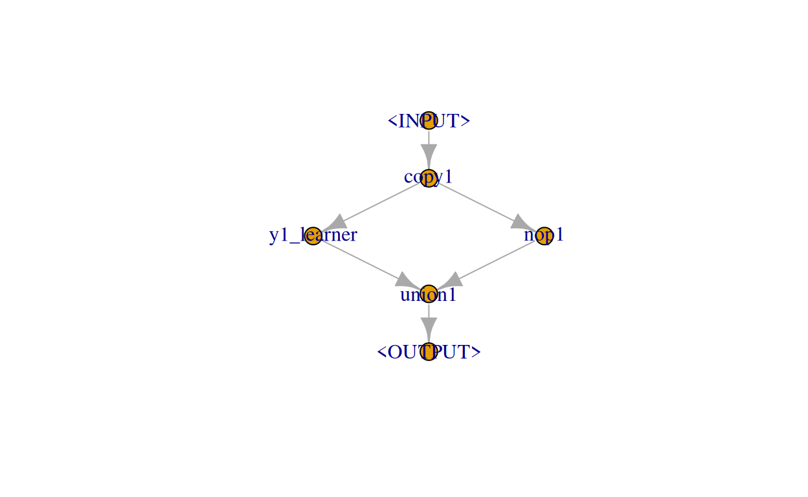
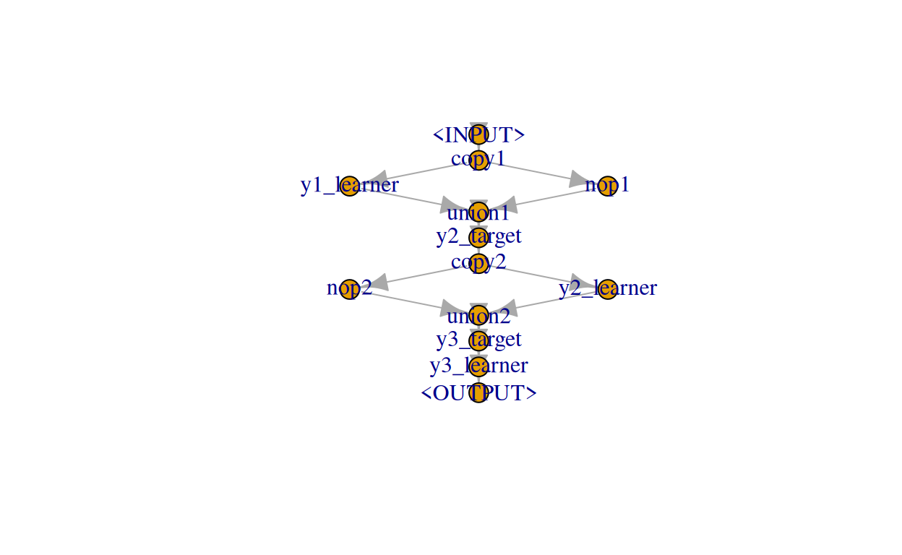

We show how to use mlr3pipelines to do regression chains.
In this tutorial we demonstrate how to use mlr3pipelines to handle multi-target regression by arranging regression models into a chain, i.e., creating a linear sequence of regression models.
In a simple regression chain, regression models are arranged in a linear sequence. Here, the first model will use the input to predict a single output and the second model will use the input and the output of the first model to make its own prediction and so on. For more details, see e.g. Spyromitros-Xioufis, Tsoumakas, Groves & Vlahavas (2016).
In the following, we rely on some toy data. We simulate 100 responses to three target variables, \(y_{1}\), \(y_{2}\), and \(y_{3}\) following a multivariate normal distribution with a mean and covariance matrix of:
library(data.table)
library(mvtnorm)
set.seed(2409)
n = 100
(mean = c(y1 = 1, y2 = 2, y3 = 3))
y1 y2 y3
1 2 3
(sigma = matrix(c(1, -0.5, 0.25, -0.5, 1, -0.25, 0.25, -0.25, 1),
nrow = 3, ncol = 3, byrow = TRUE))
[,1] [,2] [,3]
[1,] 1.00 -0.50 0.25
[2,] -0.50 1.00 -0.25
[3,] 0.25 -0.25 1.00
Y = rmvnorm(n, mean = mean, sigma = sigma)The feature variables \(x_{1}\), and \(x_{2}\) are simulated as follows: \(x_{1}\) is simply given by \(y_{1}\) and an independent standard normally distributed error term and \(x_{2}\) is given by \(y_{2}\) and an independent standard normally distributed error term.
x1 = Y[, 1] + rnorm(n)
x2 = Y[, 2] + rnorm(n)The final data is given as:
dat = as.data.table(cbind(Y, x1, x2))
str(dat)
Classes 'data.table' and 'data.frame': 100 obs. of 5 variables:
$ y1: num 0.681 1.836 0.355 1.783 0.974 ...
$ y2: num 2.33 1.735 3.126 0.691 1.573 ...
$ y3: num 3.19 3.14 2.74 4.31 2.77 ...
$ x1: num 1.76 1.01 -1.46 2.39 1.73 ...
$ x2: num 2.39 1.04 1.53 0.29 2.19 ...
- attr(*, ".internal.selfref")=<externalptr> If you feel confident to already have a good feeling of the data, feel free to skip this section. If not, you can use the rgl package to play around with the following three 3D plots with the feature variables on the x- and y-axis and the target variables on the respective z-axes:
library(rgl)
colfun = colorRampPalette(c("#161B1D", "#ADD8E6"))
setorder(dat, y1)
plot3d(dat$x1, dat$x2, dat$y1,
xlab = "x1", ylab = "x2", zlab = "y1",
type = "s", radius = 0.1, col = colfun(n))
setorder(dat, y2)
plot3d(dat$x1, dat$x2, dat$y2,
xlab = "x1", ylab = "x2", zlab = "y2",
type = "s", radius = 0.1, col = colfun(n))
setorder(dat, y3)
plot3d(dat$x1, dat$x2, dat$y3,
xlab = "x1", ylab = "x2", zlab = "y3",
type = "s", radius = 0.1, col = colfun(n))In our regression chain, the first model will predict \(y_{1}\). Therefore, we initialize our task with respect to this target:
library(mlr3)
library(mlr3learners)
library(mlr3pipelines)
task = TaskRegr$new("Multiregression", backend = dat, target = "y1")As learners we will use simple linear regression models, lm learner. Our pipeline building the regression chain then has to do the following:
To combine predictions of a learner with the previous input, we rely on PipeOpLearnerCV and PipeOpNOP arranged in parallel via gunion combined via PipeOpFeatureUnion, e.g., in the first step:
step1 = po("copy", outnum = 2, id = "copy1") %>>%
gunion(list(
po("learner_cv", learner = lrn("regr.lm"), id = "y1_learner"),
po("nop", id = "nop1")
)) %>>%
po("featureunion", id = "union1")
step1$plot()
Within the second step we then have to define \(y_{2}\) as the new target. This can be done using PipeOpUpdateTarget (note that PipeOpUpdateTarget by default drops the original target, here \(y_{1}\)). Typically one would use PipeOpUpdateTarget to apply a transformation function to the original target (possibly also renaming it) which must not be inverted later. However, in the special case of leaving the trafo at its default identity and providing a new_target_name that already matches a column of the input data, PipeOpUpdateTarget simply sets this column as the new target:
step2 = po("update_target", id = "y2_target",
param_vals = list(new_target_name = "y2")
) %>>%
po("copy", outnum = 2, id = "copy2") %>>%
gunion(list(
po("nop", id = "nop2"),
po("learner_cv", learner = lrn("regr.lm"), id = "y2_learner")
)) %>>%
po("featureunion", id = "union2")In the final third step we define \(y_{3}\) as the new target:
step3 = po("update_target", id = "y3_target",
param_vals = list(new_target_name = "y3")
) %>>%
po("learner", learner = lrn("regr.lm"), id = "y3_learner")The complete pipeline, more precisely Graph, looks like the following:
graph = step1 %>>% step2 %>>% step3
graph$plot()
By wrapping our Graph in a GraphLearner, we can perform 3-fold cross-validation and get an average of the root-mean-square error (of course, in a real world setting splitting the data in a training and test set should have been done):
rr = resample(task, learner = GraphLearner$new(graph),
resampling = rsmp("cv", folds = 3))
rr$aggregate(msr("regr.mse"))
regr.mse
0.0323751 We can compare this to a simple linear regression model only predicting \(y_{3}\):
task_y3 = TaskRegr$new("y3", backend = dat, target = "y3")
rr_y3 = resample(task_y3, learner = lrn("regr.lm"),
resampling = rsmp("cv", folds = 3))
rr_y3$aggregate(msr("regr.mse"))
regr.mse
0.8003303 For attribution, please cite this work as
Schneider (2020, April 18). mlr3gallery: Regression chains. Retrieved from https://mlr3gallery.mlr-org.com/posts/2020-04-18-regression-chains/
BibTeX citation
@misc{schneider2020regression,
author = {Schneider, Lennart},
title = {mlr3gallery: Regression chains},
url = {https://mlr3gallery.mlr-org.com/posts/2020-04-18-regression-chains/},
year = {2020}
}